In this lecture we continued the Introduction to SQL that we began in the last session.
Introduction to SQL
Simple Queries (One Table)
All queries to a database in SQL are realized via the select statement.
This is the general construction:
-
selectattribute|expression→ which attributes should the result table contain? -
fromlist of tables→ which tables are required for the query? - [
wherecondition] → which conditions should the result tuples fulfill? - [
group bylist of attributes] → summarize/condense identical attribute values - [
havingcondition] → condition in regards to grouped tables - [
order bysort] → specification of sorting for the resulting table
The where clause is used to refine the result set of tuples from a select statement. The (basic) predicates (Basisprädikate) to where can be versatile, for example
- comparison between the value of one expression and another
- specify range/boundaries for a certain value
- is the value included in a value set
- is there a certain pattern in a string
- is the value of an attribute equal to the null value
Expressions are based on constant values and/or attribute values and can be connected via arithmetic operators (+,-,*,/,%). The predicates (Basisprädikate) can be connected via logical operators (not, and, or).
There are also comparison operators for the fundamental datatypes which allow a value comparison (for numbers), a lexicographic comparison (for strings) and a time/date based comparison (for dates and times). The usual operators for these are =, <, > ≤, ≥, <>.
Now lets look at some simple queries (selection σ & projection π). We have the following table /Lecture/s
| number{PK} | title | persNr{FK} |
|---|---|---|
| 123 | Data Structures | 6897 |
| 234 | Databases in Praxis | 6897 |
| 345 | Database Essentials | 6123 |
| 456 | Exercise Data Structures | 6897 |
To find the name/title of the lectures held by a teacher with the personal number of 6897 we perform this query
select title
from Lecture
where persNr = 6897
which yields
| title |
|---|
| Data Structures |
| Databases in Praxis |
| Exercise Data Structures |
Usually queries consist of at least these blocks we've just seen: select, from, where and that's why they're often refered to as SFW-block (select-from-where).
Now lets perform a query and formulate a string predicate to find out the number of the lecture 'Data Structures':
select number
from Lecture
where title = 'Data Structures'
Which gives
| number {PK} |
|---|
| 123 |
As you can see string constants have to be wrapped in single quotes (in contrast to numeric values). Among other reasons this is done to distinguish the values from attribute names.
Let's match a string pattern to find all lectures that are about databases:
select *
from Lecture
where title like '%Database%'
| number{PK} | title | persNr{FK} |
|---|---|---|
| 123 | Data Structures | 6897 |
| 234 | Databases in Praxis | 6897 |
| 345 | Database Essentials | 6123 |
| 456 | Exercise Data Structures | 6897 |
To find the name/title of the lectures held by a teacher with the personal number of 6897 we perform this query
select title
from Lecture
where persNr = 6897
which yields
| title |
|---|
| Data Structures |
| Databases in Praxis |
| Exercise Data Structures |
Usually queries consist of at least these blocks we've just seen: select, from, where and that's why they're often refered to as SFW-block (select-from-where).
Now lets perform a query and formulate a string predicate to find out the number of the lecture 'Data Structures':
select number
from Lecture
where title = 'Data Structures'
Which gives
| number {PK} |
|---|
| 123 |
As you can see string constants have to be wrapped in single quotes (in contrast to numeric values). Among other reasons this is done to distinguish the values from attribute names.
Let's match a string pattern to find all lectures that are about databases:
select *
from Lecture
where title like '%Database%'
Result:
| number{PK} | title | persNr{FK} |
|---|---|---|
| 234 | Databases in Praxis | 6897 |
| 345 | Database Essentials | 6123 |
In this query we used wildcard characters (placeholder symbols) to match a certain pattern. The wildcard character for an arbitrary, single character is _ and for an arbitrary string it is %. Beware that the keyword like is required to do a pattern match (else it is just literal string match).
So let's look at queries where we want to select tuples based on wheather or not an attribute value is contained in a set. We therefore modified our original /Lecture/s table:
| number{PK} | title | credits |
|---|---|---|
| 123 | Data Structures | 6 |
| 234 | Databases in Praxis | 5 |
| 345 | Database Essentials | 3 |
| 456 | Exercise Data Structures | 2 |
To select all lectures with 3, 5 or 10 credits
select *
from Lecture
where credits in (3, 5, 10)
A set of constants can be specified by putting them into parentheses as you can see above. To test weather a value is contained in a set we use the in resp. not in operator. The previous query could have been formulated via logical connection like this as well
select *
from Lecture
where credits=3 or credits=5 or credits=10
which is more cumbersome in this case.
The last simple query we'll look at uses ranges/boundaries to find all tuples with at least 3 and at max 10 credits.
select *
from Lecture
where credits between 3 and 10
-- alternatively: where credits >= 3 and credits <= 10
which yields the following result relation:
| number{PK} | title | credits |
|---|---|---|
| 123 | Data Structures | 6 |
| 234 | Databases in Praxis | 5 |
| 345 | Database Essentials | 3 |
Complex Queries (Multiple Tables)
Onto some more complex queries where we query against multiple tables (cartesian product). Suppose we have the following table Lecture
| number{PK} | title |
|---|---|
| 123 | Data Structures |
| 234 | Databases in Praxis |
| 345 | Database Essentials |
and Hears
| number | matrNr |
|---|---|
| 123 | 134534 |
| 234 | 123456 |
| 345 | 234876 |
| 234 | 134534 |
and want to find out the numbers and titles of the lectures that the student with matricle number 134534 attends.
select Hears.number, title
from Lecture, Hears
where Lecture.number = Hears.number and matrNr = 134534
This yields
| number | title |
|---|---|
| 123 | Data Structures |
| 234 | Databases in Praxis |
As we can see in the query above we specify all the tables that are needed to resolve the query as comma seperated list after the from keyword. Then the cartesian product of the tables is formed internally, that's why we have to do where Lecture.number = Hears.number when selecting the tempoarily resulting rows.
Because the temporary resulting relation holds the attribute number two times (once from Lecture and once from Hears) we have to qualify the attribute we want to select by prepending the attribute name with the table name (select Hears.number).
It is also possible to provide an alias to tables in the from clause ala
select H.number, title
from Lecture L, Hears H
where L.number = H.number and matrNr = 134534
to improve readability and shorten long table names.
When targeting the same table two or more times in one query it is required to provide those aliases to distinguish between the tables:
| matrNr | name | credits |
|---|---|---|
| 123456 | Archimedes | 45 |
| 134534 | Sophokles | 33 |
| 145698 | Cleopatra | 42 |
We want to find the name and credits of the students that have more credits than "Cleopatra":
select S.name, S.credits
from Student S, Student C
where C.name = 'Cleopatra' and S.credits > C.credits
↓
| name | credits |
|---|---|
| Archimedes | 45 |
Back to the previous example where we wantet to find out the numbers and titles of the lectures that the student with matricle number 134534 attends, because this is a use case for theta joins (\(⋈_{\theta}\) - join one some condition):
select Hears.number, title
from Lecture join Hears
on Lecture.number = Hears.number
where matrNr = 134534
To perform a theta join the from clause is exteneded with the keyword join between the involved tables, followed by the keyword on after which the join condition is specified (because we compare with = in the theta join it is an equijoin btw).
However the most appropiate join in this use case is the natural join ⊗ because we want to join on attributes that have the same name in both tables (and are foreign resp. primary keys). To do so in SQL we formulate this query:
select number, title
from Lectures natural join Hears
where matrNr = 134534
which yields the same old result relation (but with less query syntax):
| number | title |
|---|---|
| 123 | Data Structures |
| 234 | Databases in Praxis |
As you see the natural join in SQL is express by replacing the comma between the involved tables in the from clause with the keyword natural join.
Aggregation and Grouping
Often times it is of interest to perform some kind of calculations on the tuples of a table, which means to involve all values of an attribute. Functions that do this are called aggregate functions and here are some common ones:
-
min(A)→ yields smallest value present in attribute A -
max(A)→ yields largest value present in attribute A -
avg(A)→ yields average of all values present in attribute A -
sum(A)→ yields sum of all values present in attribute A -
count(A)→ yields amount/count of values present in attribute A -
count(distinct A)→ yields amount/count of unique values present in attribute A -
count(*)→ yields amount/count of tuples in the table
Suppose we have the following table Personal to see aggregate functions in action 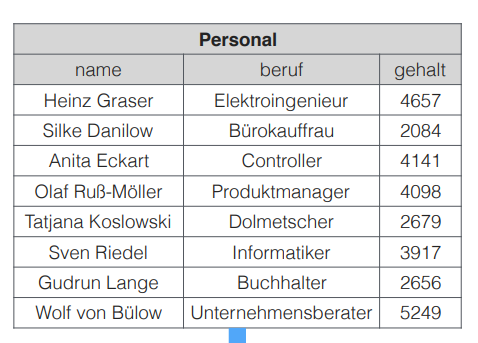 To find out which is the highest and lowest salary(gehalt) in the table we formulate the following query
select min(gehalt) as minimum,
max(gehalt) as maximum
from Personal
yielding
| minimum | maximum |
|---|---|
| 2084 | 5249 |
Since the result of an aggregate function usually operates on multiple tuples of a relation, the result can only be displayed with results of other aggregate functions rather than other single attributes (think about it this way, which single attribute would make sense in the row of the result relation we just saw? none).
It is also possible to group values. Tuple that have the same value for an attribute (or set of attributes) are then grouped by those same attribute values. Aggregate functions then operate isolated on those formed groups, which means grouping only makes sense when aggregations are performed subsequently. The schema of the resulting table can only hold the grouped attributes and the result of the attribute functions.
This slide gives a good visualization 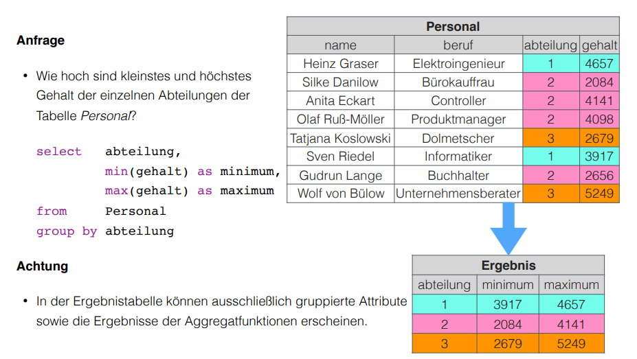
To filter groups we can use the having keyword which acts like a where clause but for groups and follows the group by statement.
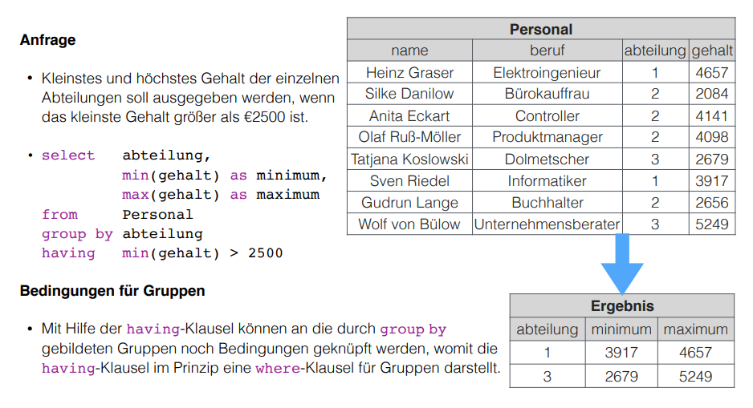
Connecting SFW Statements
It is possible to connect whole select statements with each other in SQL. This functionality corresponds to the operations set union and set difference we know from relational algebra. Likewise the data types of the attributes from the tables that should be combined need to be of the same data type (and semantic) in SQL as well.
The operators to perform this set operations
-
unioncorresponds to the join/union operation ∪ from relational algebra and also removes duplicates -
except,minuscorresponds to the set difference - from relational algebra -
intersectcorresponds to the intersection ∩ from relational algebra (Schnittmenge)
Example of combining/connecting SFW statements: 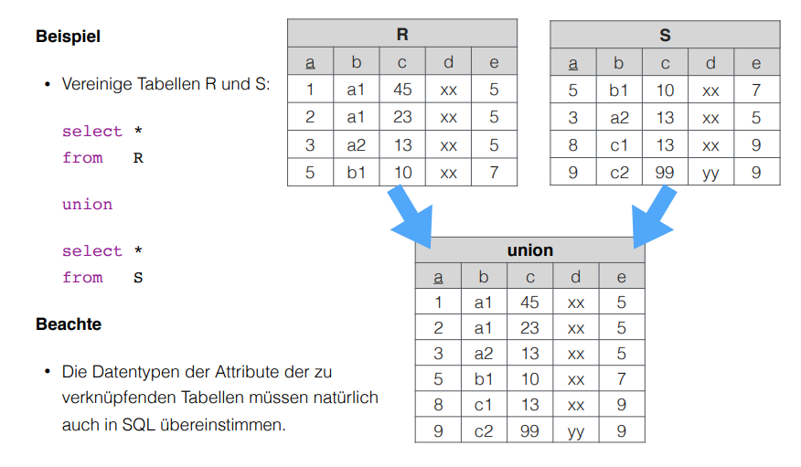
Subqueries
It is possible to execute further select statements inside a select statements. There are two possible approaches/semantics (Semantiken) to do that, the value semantic (slides: Wertsemantik) and the set semantic (slides: Mengensemantik?!). I'll use the german terms Wertsemantik and Mengensemantik because it is not clear to me what the proper english terms would be :o. Subqueries can be nested as desired as long as the semantic is correct (recursion).
Wertsemantik
The subquery returns a single value (doesnt matter if string, number or date). Subqueries that follow Wertsemantik can be used at every place/position where single values may have been used.
Example:
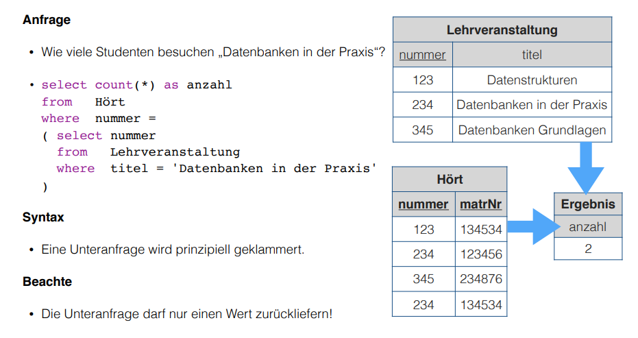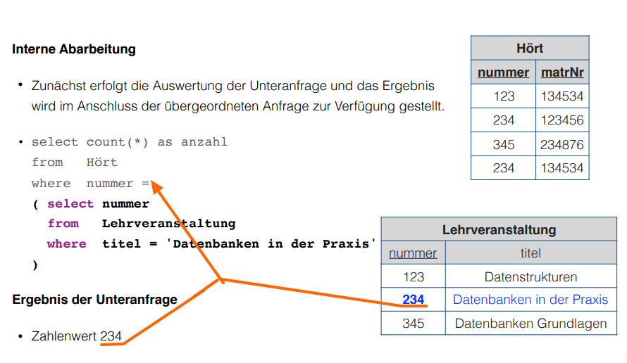
↑ then the surrounding/wrapping query is executed which finds the two tuples with a number of "234" in the Hears table which is then counted and returns the result table
| anzahl |
|---|
| 2 |
Here are some equivalent queries to the one we examined in the pictures above
-- 1
select count(*) as anzahl
from Hört, Lehrveranstaltung
where Hört.nummer = Lehrveranstaltung.nummer and titel = 'Datenbanken in der Praxis'
-- 2
select count(*) as anzahl
from Hört natural join Lehrveranstaltung
where titel = 'Datenbanken in der Praxis'
Mengensemantik
The subquery returns a Wertemenge (set of values). To then evaluate the returned result set special language features/constructs are needed.
Example:
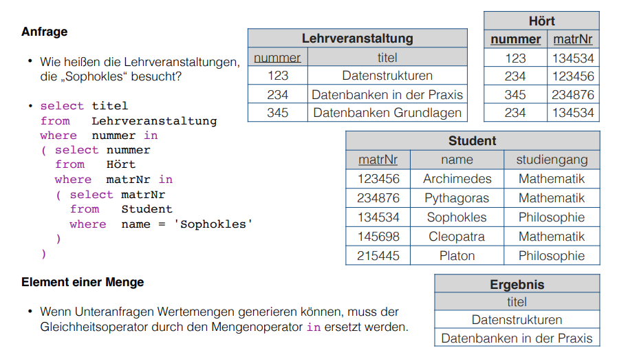
Notice that when the subquery generates a set of values like in the picture above, the = operator at the where statement is replaced by the in set operator because we're dealing with multiple values. This is the procedure of the query above:
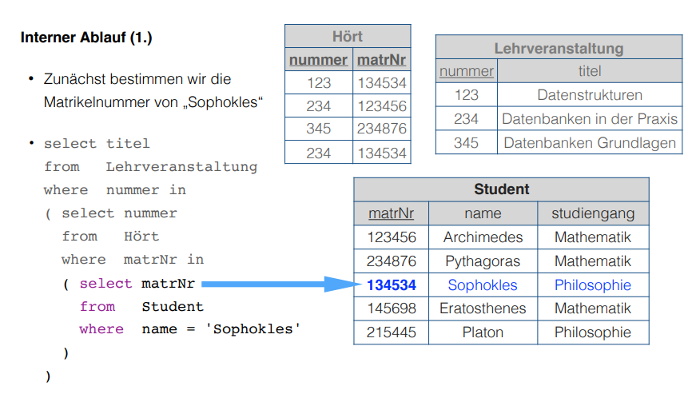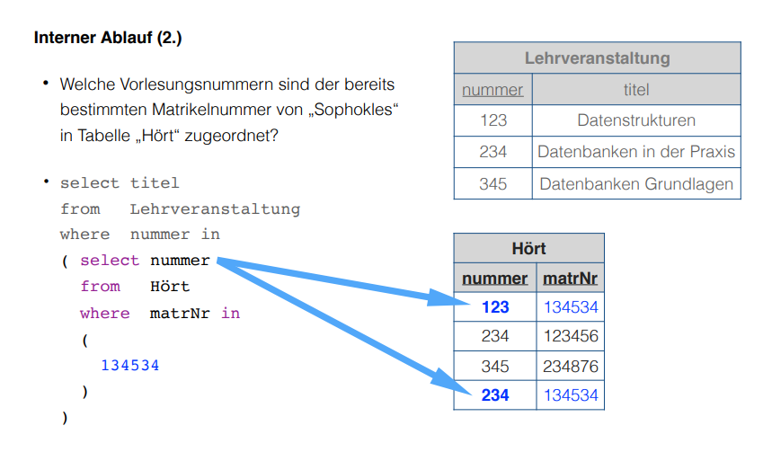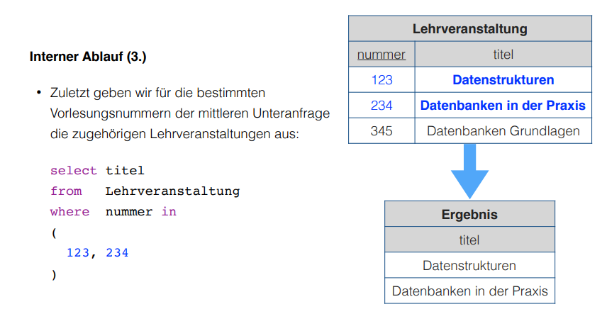
The subqueries we saw so far were non-correlating. They worked locally and had only to be evaluated once because their result stayed constant because of the local nature.
But suppose we want to access attribute values of surrounding/wrapping queries. This is where correlating subqueries come into play. It is possible to access wrapping/surrounding tables from the inside of subqueries (the circumstances may require qualification via the table name). The correlation is created as soon as such reference exists. A correlating subquery always refers to the currently viewed tuple of the parent query and therefore has to be computed for every tuple of the result set (slides: Eine korrelierte Unteranfrage bezieht sich immer auf das aktuell betrachtete Tupel der übergeordneten Anfrage und muss deshalb für jedes Tupel von deren Ergebnismenge neu berechnet werden).
Example:
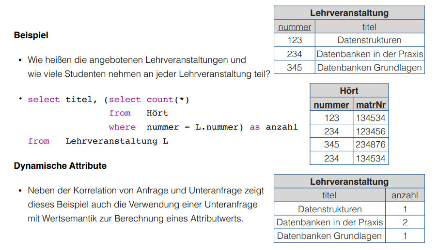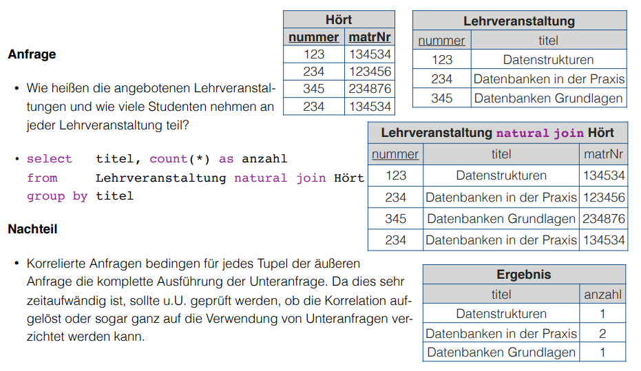
Set Operations (Mengenoperatoren)
We already know the specification of constant sets and how to test if an attribute value is contained in such set via where .. in eg where attribute in ('Chemnitz', 'Leipzig', 'Dresden'). There are more set operators of which we will introduce some now since they're also helpful in regards to subqueries and can be used to model the quantifiers from relational calculus:
-
exists SETbecomestruewhenSETincludes at least one element -
COMPARISON-OPERATOR all SETbecomestruewhen the comparison operator yieldstruefor each element inSET -
COMPARISON-OPERATOR any SETbecomestruewhen the comparison operator yieldstruefor any element inSET
Examples: 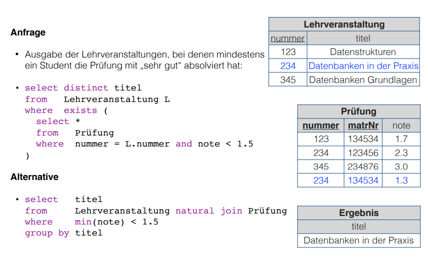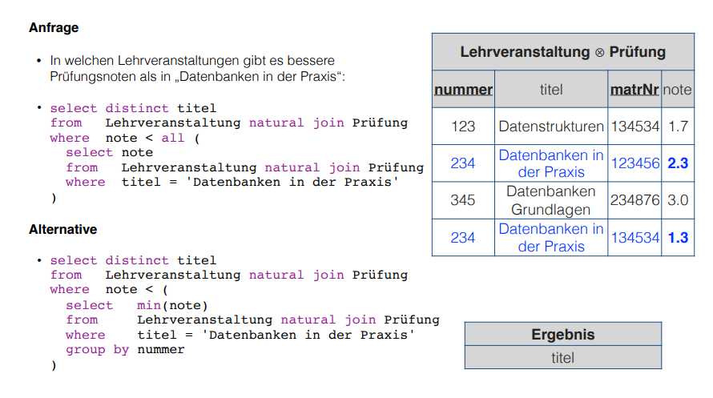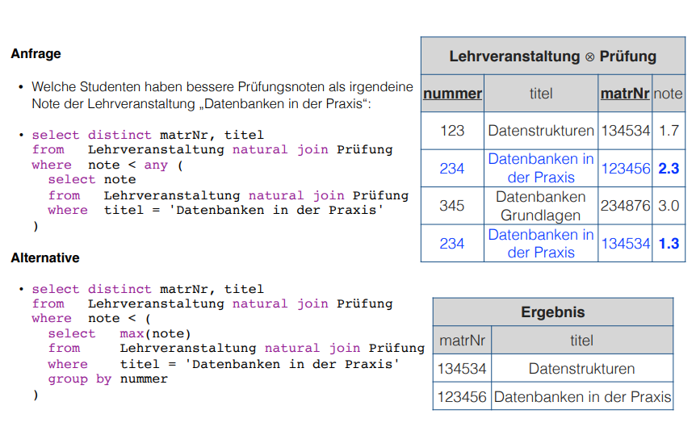